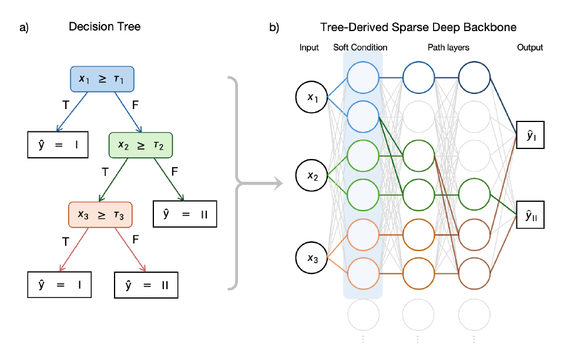

Editable XRL
CoChoice makes an RL agent’s actions, predictions, and values editable through Markov trees. Corrections guide continued learning, helping people and agents coordinate their roles.
I study how people can understand, revise, and guide AI systems through interactive explanations. My research combines human-computer interaction, explainable AI, and human behavior modeling to help people shape AI decisions around their knowledge and preferences, with applications in healthcare and transportation.
I am a PhD student at Ubicomp Lab at the National University of Singapore, advised by Prof. Brian Lim. Before joining NUS, I spent two years as a research assistant at COOLA Lab in Southeast University, where I worked with Prof. Yan LYU and Prof. Wanyuan Wang.
* Corresponding author
CoChoice makes an RL agent’s actions, predictions, and values editable through Markov trees. Corrections guide continued learning, helping people and agents coordinate their roles.

An interactive graph workspace for LLM-assisted sensemaking. People can branch into alternatives, merge insights, and reorganize conversations while controlling the context available to the model.


CoExplain lets people revise explanations through rules on interpretable attributes. A study with 43 participants found improvements in understanding and alignment compared with read-only explanations.


A visual programming toolkit for customizable diagnostic models. Doctors can express their preferred examination sequences and thresholds in an interpretable model.

An ear-motion input system for accessible interaction with VR devices. A study with 15 volunteers found the approach effective and easy to use.
National University of Singapore